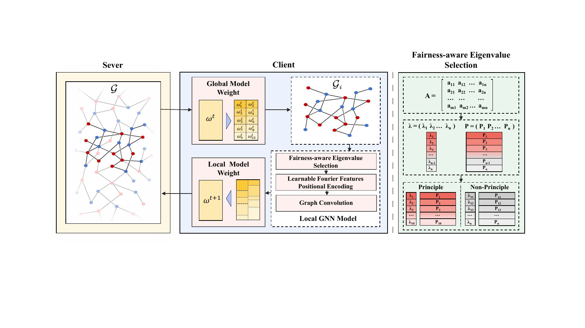
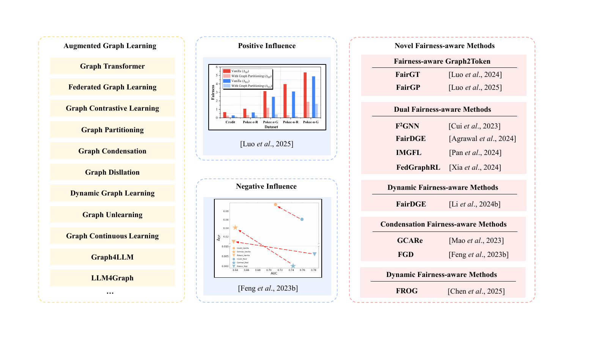
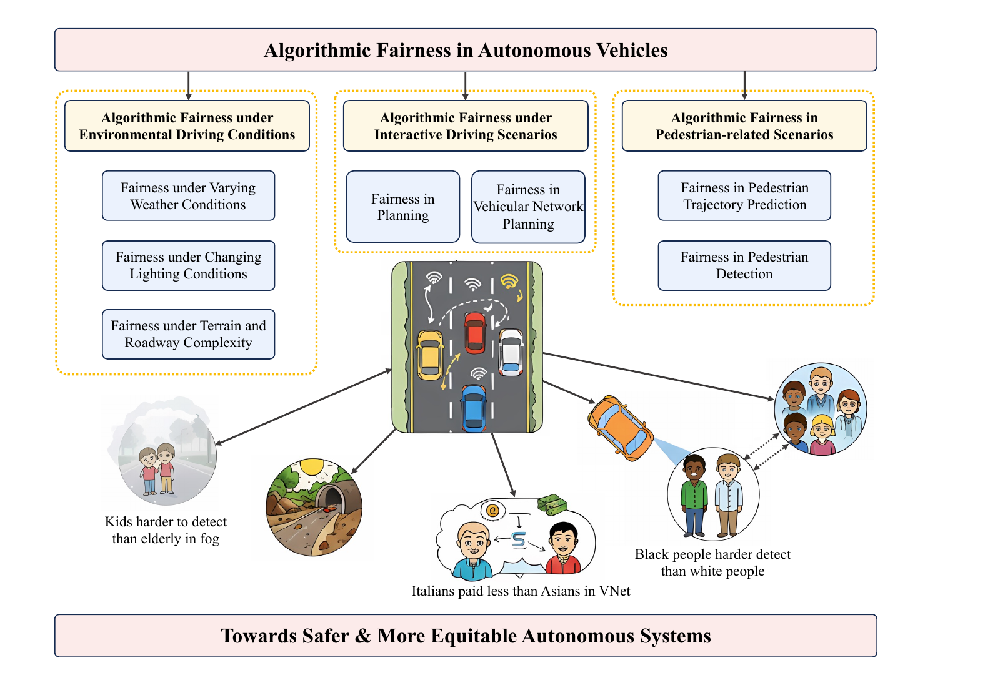

Home
Dr. Renqiang Luo
Assistant Professor of College of Computer Science and Technology
Jilin University
Email: lrenqiang@jlu.edu.cn
Office: [Computer Building, Qianwei South Campus, A427]
College Homepage:https://ccst.jlu.edu.cn/info/1359/20324.htm
About Me
Welcome to my academic homepage! I am a assistant professor at Jilin University. My research focuses on Trustworthy AI and Graph Learning, particularly applying fairness-aware encoding to address challenges in Graph Transformer.
[Google Scholar] |
[ORCID] |
[GitHub]
News
- Nov 2026: One paper entitled: Circuit-Level Preference Steering under Knowledge Conflict in Large Language Models accepted by WSDM'27.
- Sep 2026: Three papers entitled: UFO: A Unified Flow-Oriented Framework for Robust Continual Graph Learning, An Information-Theoretic Evaluation Framework for Benchmark and Model Diagnosis in Knowledge Tracing and The Commit-Abstain Circuit: Why Language Models Hallucinate Instead of Abstaining accepted by NeurIPS'26.
- Sep 2026: One paper entitled: BrainGP: Localizing Disease-Related Functional Regions for Autism Spectrum Disorder accepted by BIBM'26.
- Aug 2026: One paper entitled: Learning to Optimize Faster: Multi-Timescale Prompt Optimization with Episodic Gradient Memory accepted by ICONIP.
- Aug 2026: One paper entitled: Twin Worlds: Equivariance-Based Abstention for Evidence-Grounded Reasoning accepted by EMNLP.
Highlight Papers

IEEE Transactions on Pattern Analysis and Machine Intelligence · 2026
Improving fairness for both server and clients while preserving utility in federated graph learning.
Paper ↗

IEEE Transactions on Knowledge and Data Engineering · 2026
A survey of fairness challenges and approaches in augmented graph learning.
Paper ↗

IEEE Transactions on Intelligent Transportation Systems · 2026
A fairness perspective on artificial intelligence for autonomous vehicles.
Paper ↗